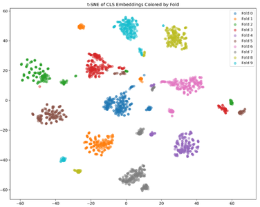
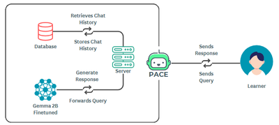

01About
About
About Me
01 / 06I'm a passionate researcher and developer with a strong interest in building intelligent systems that can learn and reason. My current focus is on exploring the frontiers of AI.
- Research Interests
Selected Publications
02 / 06
Improving User Engagement and Learning Outcomes in LLM-Based Python Tutor: A Study of PACE
Skills
03 / 06Programming Languages
Web Application/Frameworks
Machine Learning
Databases
Tools & Platforms
Work Experience
04 / 06Research Intern Center for Computational & Data Sciences (CCDS), IUB 12/2024 – 07/2025
12/2024 – 07/2025Bashnudhara RA, Dhaka, Bangladesh
- Currently exploring Agentic Systems.
- Building the next version of the tutoring system for classroom deployment.
UG Research Student Center for Computational & Data Sciences (CCDS), IUB 10/2023 – 12/2024
10/2023 – 12/2024Bashnudhara RA, Dhaka, Bangladesh
- Developed a Python Tutoring Application powered by Small Language Model (SLM) for an Intelligent Tutoring System using React, FastAPI, MySQL, and Gemma 2B.
- Conducted research on Deep Learning and LLM architectures to enhance intelligent systems.
- Attended a Systematic Literature Review Writing Workshop to improve research documentation.
- Participated in a Deep Learning Code Management Workshop to learn best practices for version control in deep learning projects.
Professional Development
05 / 06ACM SIGCHI Winter School on Human-Computer Interaction South Asia UCSC 01/01/2024 - 07/01/2024
01/01/2024 - 07/01/2024Colombo, Sri Lanka
- Participated in a three-day program on Human-Computer Interaction (HCI), led by experts including Dr. Neha Kumar and Dr. Michael Bernstein.
- Received a $500 travel grant.
- Gained practical experience in HCI research methods, including data collection, analysis, and user interface design through workshops and projects.
- Engaged in discussions and mentorship with HCI professionals like Dr. Ding Wang (Google) and Dr. Nova Ahmed.
- Explored Colombo, Sri Lanka, while networking with fellow researchers.
Co-curricular Activities
06 / 06Chairperson IEEE Computer Society IUB Student Branch Chapter 08/2022 – 05/2023
08/2022 – 05/2023Bashnudhara RA, Dhaka, Bangladesh
- Organized and led TechFest IUB, a major tech event held at the end of each semester.
- Grew the executive board from 7 to 17 members, showing strong leadership.
- Used Trello to improve event planning and collaboration.
- Taught students Arduino Programming, encouraging hands-on learning.
- Ran a successful fundraising program during Ramadan.
- Increased active general membership from 20 to 304.
- Improved the club's branding and visibility.
- Built partnerships with outside groups for collaboration and opportunities.